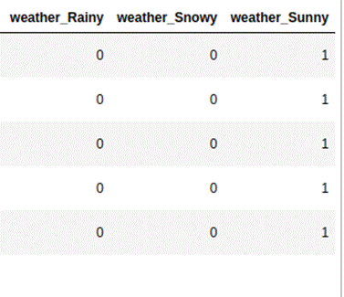
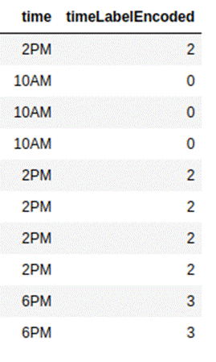
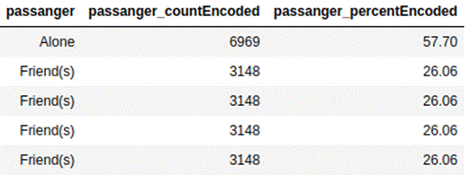
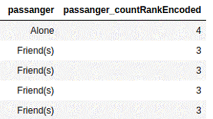
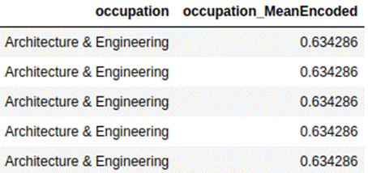

4.1: Engineering Categorical Features
A categorical feature or nominal
feature has multiple unique categories, where there is no order of importance
for one category against the other. An example can be different departments in
a company, such as finance, human resource, sales, and marketing. Categorical
features cannot be introduced to machine learning models as they are. Instead,
they should be preprocessed and converted into a format that can be understood
by the model. These techniques are called as encodings . There are many different
types of encodings available. We will now look at different types of encodings
for categorical features.
4.1.1 Dummy Encoding
or One-Hot Encoding
Linear algorithms cannot learn from
categorical features as it is. Instead, these features need to be converted to
a one-hot encoded format for the model to be able to learn. This is especially
useful in the event of auto-correlation, where we can create seasonality
related dummy variables to treat auto-correlation.
Let's take the example of the
feature 'weather' from the coupon recommendation dataset. It has 3 categories,
namely 'Sunny', 'Rainy', and 'Snowy'. We can use the Pandas' function get_dummies
to create dummy encoded variables. Below is what the output will look like.

While creating dummy encoding, we
should be careful about the 'dummy variable trap'. This is a scenario when
variables are highly correlated to each other. For linear models, it can be
problematic and could lead to multicollinearity. To mitigate this, we can drop
one of the columns. In Pandas, we can do this by changing the parameter in pd.get_dummies
from drop_first=False, to drop_first=True.
4.1.2 Label Encoding
Tree-based algorithms can learn from
categorical features without having to create dummy features. Tree models
instead require categorical features to be represented as labels. In this
method, a unique number is assigned to each category. The numbers assigned to
each category are to distinguish from other categories. These numbers do not
represent rank in any order of importance or usefulness.
We can use the LabelEncoder function from
the Sklearn library to convert categorical features into label-encoded
features. Below is how the time feature will look, before and after label encoding.

4.1.3 Count, and Percentage
Encoding
In count encoding, we replace the
respective categories with their count of occurrence. In percent encoding, we
replace categories with percentages. It can be used for both linear and
tree-based algorithms. If a specific category is present more often than
others, in such a situation, count replacement for the category could become an
outlier. In this situation, we can perform log transformation, as it will
smoothen the effect of the outlier. Also, count or percentage encoding should be
done based on the count of categories in training data only and not on the
entire data set. As otherwise it will lead to data leakage and overfitting.
Below is the encoding for the passanger feature
in the coupon recommendation data set
with count and percentage.

4.1.4 Encoding by
Rank of Counts
One of the problems with count
encoding is that if a specific category is the present majority of the time, it
can make the counts look skewed. One way to fix this problem is by performing
log transformation. We can mitigate this challenge also by ranking categories
based on the count for the categories and replacing categories with the rank.
We first take the count of each category in the feature. Categories are sorted
in the order of their counts in ascending order. The category which has the
lowest count is given value 1. The count for other categories in ascending
order is incremented by 1. These encodings should be developed only from
training data.
One additional advantage of the rank
of counts encoding is that this is useful for both linear and non-linear
models.
For the passanger
feature in the coupon recommendation data set, below is what the rank of counts
will look like.

4.1.5 Target Encoding
We can take summary statistics for
categories against the dependent variable and use it to replace the categories.
The most commonly used summary statistics are the mean value of the dependent
variable. We can calculate the mean value of the dependent variable for each
category and replace these mean values with actual categories. Mean encodings
can be applied for both regression and classification problems.
For regression problems, we can also
use quantiles, such as the 25th percentile, median, and 75th percentile instead
of the mean. We can also use the standard deviation for each category, to
replace each category. If data in the dependent variable has outliers, we can
instead convert the dependent variable to a log scale and then calculate
desired summary statistics for each category. Below is an example of mean
encoding for the coupon recommendation dataset for the occupation feature.

This encoding is useful when we have
too many categories in the categorical feature. We should however calculate
these encodings only on the training data. After calculating the encodings, we
can apply these to test data and validation data. This will prevent
overfitting.
For categorical features with high
cardinality, for the last 3 encodings discussed, it can be possible that a
category is present only in the test data and validation data, whereas it is
absent in training data. In such a case, encoding for the categorical feature
will not be representative of all data. We can drop the encoding feature of
high cardinality features in such a case. Although not an ideal solution, we
can also include encoding from training data of another cross-validation sample
for the missed categories, as a workaround. It will ensure that we have
encoding value for the missing category, and at the same time, there is minimal
data leakage, as we are only taking encoding for the missing category and from
training data of another cross-validation sample. Including encoding from the
entire dataset should always be avoided, as it will lead to data leakage and
overfitting. In rare occurrences when the specific category for the feature is
only present in test data and not in training data of any cross-validation
sample, we may obtain encoding for the specific category from test data. If
there are too many such categories in a feature that are not present in
training data, we should avoid using count, percent, rank percent, and target
encoding for such features.